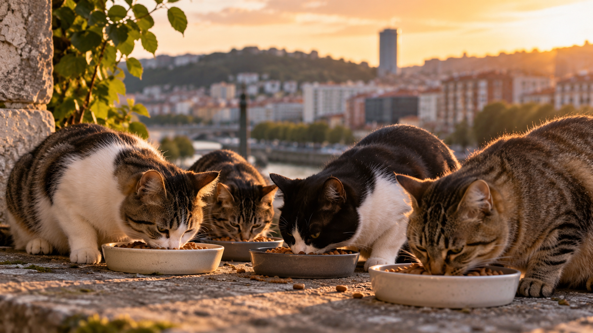

Una ciudad que también cuida de sus gatos.

Facilita el seguimiento de las colonias felinas y comunica incidencias de forma rápida y sencilla.
Colonias.Cuidamos las colonias felinas de Bilbao.

Facilita el seguimiento de las colonias felinas y comunica incidencias de forma rápida y sencilla.
Colonias.